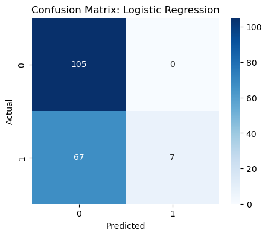
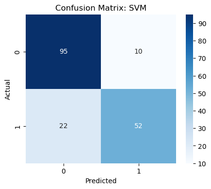
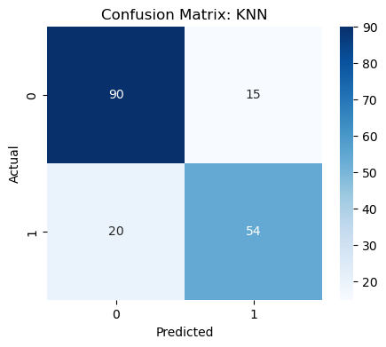

Titanic Survival Prediction
Machine Learning Classification Case Study
Predicting passenger survival using classical machine learning algorithms, feature engineering, and data preprocessing.
← Back to Portfolio891
Passengers
3
Models Compared
82%
Best Accuracy
SVM
Best Model
Project Overview
This project predicts whether a passenger survived the Titanic disaster using demographic and travel information. The workflow includes data cleaning, exploratory data analysis, feature engineering, model training, and evaluation.
Technologies
Python
Pandas
NumPy
Scikit-learn
Matplotlib
Seaborn
Workflow
1. Data Cleaning
- Handled missing values
- Removed unused features
- Prepared categorical variables
2. Exploratory Data Analysis
- Survival by gender
- Passenger class analysis
- Age and fare distributions
3. Model Training
- Logistic Regression
- K-Nearest Neighbors
- Support Vector Machine
Model Comparison
Logistic Regression
Accuracy: 63%
Accuracy: 63%
KNN
Accuracy: 80%
Accuracy: 80%
Support Vector Machine ⭐
Accuracy: 82%
Accuracy: 82%
Project Gallery



Key Takeaways
- Learned to clean and preprocess real-world datasets.
- Compared multiple classification algorithms.
- Applied feature engineering to improve model performance.
- Evaluated models using accuracy and confusion matrices.
Future Improvements
- Random Forest
- XGBoost
- Cross Validation
- GridSearchCV